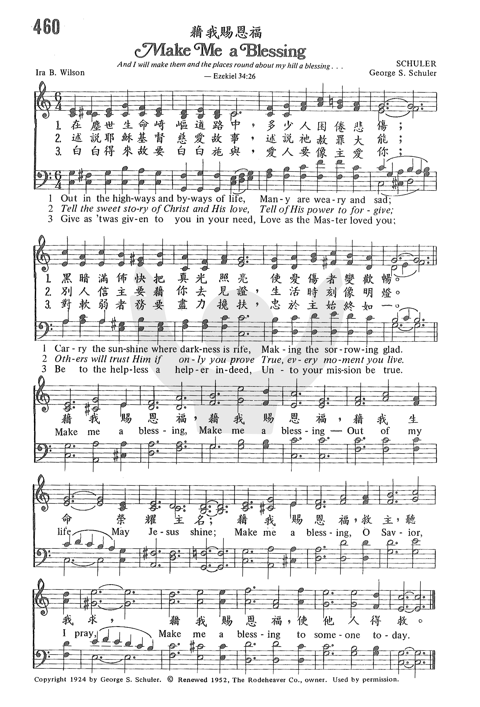

1654 藉我賜恩福 Make Me
a Blessing
|
|
|
1 Out in the highways and byways
of life,
Many are weary and sad;
Carry the sunshine where darkness is rife,
Making the sorrowing glad.
Refrain:
Make me a blessing, Make me a blessing.
Out of my life may Jesus shine;
Make me a blessing, O Savior, I pray.
Make me a blessing to someone today.
2 Tell the sweet story of Christ and his love,
Tell of his pow'r to forgive;
Others will trust him if only you prove
True, ev'ry moment you live. [Refrain]
3 Give as 'twas given to you in your need,
Love as the Master loved you;
Be to the helpless a helper indeed,
Unto your mission be true. [Refrain] |
1 在尘世生命崎岖道路中，多少人困倦悲伤，
黑暗满布，快把真光照亮，使忧伤者变欢畅。
2 述说耶稣基督慈爱故事，述说祂赦罪大能，
别人信主要藉你去见证，生活时刻像明灯。
3 白白得来，故要白白施与，爱人要像主爱你，
搀扶软弱者务要尽心力，忠于主始终如一。
（副歌）
藉我赐恩福，藉我赐恩福，藉我生命荣耀主名；
藉我赐恩福，救主，听我求，藉我赐恩福，使他人得救。 |
|
http://www.sooopu.com/html/301/301575.html

 |
| |
|
https://youtu.be/vgg74RPoJkg 藉我賜恩福 Make Me a Blessing - 歐讚音樂
http://www.hymncompanions.org/Mar/23/stream.php
藉我賜恩福
Make Me a Blessing
在塵世生命崎嶇道路中，多少人困倦悲傷，
黑暗滿佈，快把真光照亮，使憂傷者變歡暢。
述說耶穌基督慈愛故事，述說祂赦罪大能，
別人信主要藉你去見證，生活時刻像明燈。
白白得來，故要白白施與；愛人要像主愛你，
攙扶軟弱者務要盡心力，忠於主始終如一。
（副歌）
藉我賜恩福，藉我賜恩福，
藉我生命榮耀主名；
藉我賜恩福，救主，聽我求，
藉我賜恩福，使他人得救。
幫助他人是基督徒的本份。 林後1:4 「我們在一切患難中，他就安慰我們，叫我們能用神所賜的安慰，去安慰那遭各樣患難的人。」
這首聖詩的歌譜是舒勒（George S.
Schuler,1882-1973）所作，據他說，詩詞是威爾遜所作，當年他們同在慕迪聖經學院就讀且是室友，可是威爾遜卻記不起來。原稿送給出版公司時，曾被退回，舒勒斥資製版，印了一千份，當時幾乎虧損；直到1924年，名歌唱家狄伯（George
Dibble）在俄亥俄州克里夫蘭國際主日學會議時，介紹本詩歌，才不脛而走。
Dedicated to the Moody Memorial Church Choir.
舒勒出生於紐約，先後就讀於芝加哥音樂學院及慕迪聖經學院，並在後者執教四十年。退休後在出版公司任編輯，作了許多福音詩歌，並編印鋼琴和風琴樂譜。
威爾遜（Ira B. Wilson,1881-1950）出生於美國愛荷華州。 曾隨他姊姊學小提琴風琴與和聲學。1902年進慕迪聖經學院
，接受佈道音樂的訓練。1905年任出版公司編輯，編印合唱歌曲及數本聖樂雜誌，他有許多筆名。

每當我選寫一則聖詩故事時，都先祈求聖靈帶領，通常有曲調浮現腦海。「藉我賜恩福」是我心愛聖詩之一。
當這首聖詩不時縈迴在我腦海時，我搜遍了許多參考書，卻找不到有關的資料，幾度想放棄撰寫這首聖詩。 最後我找到了以上簡單的資料。
當我祈求聖靈光照時，霍然憶起不久前譯過的一首麥愛瑪的禱文（Daily Prayer by Alma H. McNatt）與本詩含意雷同，特在此分享。
『 慈悲的天父，
當有人需要教導時，請教我曉諭；
有人需要福音時，請藉我傳揚；
有人需要關愛時，請遣我撫慰；
有人需要音樂時，請容我歌唱；
有人需要傾訴時，請使我聆聽；
有人需要輔導時，請差我指引；
有人需要禮物時，請命我送贈；
有人需要代禱時，請允我祈求；
有人需要援助時，請促我伸手。 阿們！』
中英文聖詩集參考
英文歌名 Make
Me a Blessing
頌主新歌 477
頌主新歌(中英雙語) 481
教會聖詩 460
生命聖詩 247
新聖詩 203
歡欣讚美 670
聖徒詩集 634
聖詩 419
讚美 402
世紀讚頌 399
青年聖歌I 81
校園詩歌I 21
http://www.xueshengshi.com/?p=5022
简介（一） （来源：《岁首到年终》）
藉我赐恩福
Make Me a Blessing 《岁首到年终》
你们白白的得来，也要白白的舍去。（太 10:8）
一个成熟的基督徒，其生命的特征是肯与人「分享」。记得小时候母亲常叮咛我，吃东西时若被其它小朋友看到，则一定要与他人分享，不可独享。但我总是舍不得，老是学不会这功课而挨骂，因为我尚幼稚不够成熟，自顾不暇，那里会想到别人？直到信主后，大学期间在孤儿院里事奉，才体会到「分享」的喜乐，正如主耶稣说：「施比受更为有褔」（徒
20:35）。因此，从一个人是否具有「分享」的生命气质，可以窥见其基督徒灵性的成熟度。
不能与人「分享」，有两大原因，其一是「不能给」，因为自己没有东西可给，生命虚空，如何给？给什么？从未经历主拯救大能的人，如何叫他作见证？贪爱世界的人，如何叫他将心给主？常以地上的事为念的人，如何叫他服事主、传福音？
其二是「不肯给」，这种人的生命就像死海一般，只有接受而不愿付出，自私而徒受恩典。即使给，也仅仅给那些他所爱的少数人，给那些对他有利益，将来有回馈的人。
基督徒从主领受恩典，乃有神的托付，为要成为神赐福众人的导管，流露丰盛的活水泉源，滋润干渴的田地。
1 在尘世生命崎岖道路中，多少人困倦悲伤，
黑暗满布，快把真光照亮，使忧伤者变欢畅。
2 述说耶稣基督慈爱故事，述说祂赦罪大能，
别人信主要藉你去见证，生活时刻像明灯。
3 白白得来，故要白白施与，爱人要像主爱你，
搀扶软弱者务要尽心力，忠于主始终如一。
（副歌）
藉我赐恩福，藉我赐恩福，藉我生命荣耀主名；
藉我赐恩福，救主，听我求，藉我赐恩福，使他人得救。
＊我们为什么甚少经历在基督里的丰盛呢？因为我们没有白白的施予。 ── 戴德生
https://hymnary.org/text/out_in_the_highways_and_byways_of_life
https://hymnstudiesblog.wordpress.com/2018/12/22/make-me-a-blessing/
(photo of Ira B. Wilson)
MAKE ME A BLESSING
“…So will I save you, and ye shall be a blessing…” (Zech. 8:13)
INTRO.:
A song which reminds us that one reason why we are saved is to be a blessing
to others is “Make Me a Blessing.” The text was written by Ira Bishop Wilson,
who was born on September 6, 1880, at Bedford, Iowa. Wilson’s sister taught him
to play the violin and organ while he was still at home, and he began studying
music theory in his youth. Around 1902, Ira began studies at the Moody Bible
Institute in Chicago, Illinois, with the view of training to be a musical
evangelist. However, in 1905, he went to work for the Lorenz Publishing Company
in Dayton, Ohio, as a composer and editor. There he wrote a large number of hymn
arrangements, choral anthems, and cantatas, often using the pseudonym of Fred B.
Holton. His compositions appeared in The Choir Leader and The Choir Herald; he
also served as editor in chief of The Volunteer Choir. His works include The
King’s Message (1910), The Beginners’ Choir (1911), Praise Ye: A Collection of
Sacred Songs (1913), and His Worthy Praise (1915).
Apparently, these words were written around 1909. The tune (Schuler) was
composed by George Stark Schuler (b. Apr. 18, 1882; d. Oct. 30, 1973). A native
of New York City, NY, he received his training at the Moody Bible Institute in
Chicago, where he went on to be a faculty member for forty years. The melody is
dedicated to the Moody Memorial Church in Chicago and was probably produced
during a period when he was song director there. The song was first published as
a leaflet with Schuler’s music in 1924 and introduced at the International
Sunday School Convention in Cleveland, OH, that year. The original copyright was
owned by Schuler. Later it appeared in Songs of Evangelism edited by Schuler and
E. O. Excell for Glad Tidings Publishing Company of Chicago, in 1925. After
retiring from Moody, Schuler served as an editor with the Rodeheaver Publishing
Company for several years before his death at Sarasota, FL.
In 1930, Wilson moved to Los Angeles, CA, but continued his relationship with
Lorenz. Around 1944, a friend named Phil Kerr came to visit Wilson one day. Both
men were gospel musicians and, at Ira’s invitation, the other man sat down at
the piano to play. He finished with “Make Me a Blessing.” Wilson listened
politely, but it was evident he did not know the song. His eyes widened in
astonishment when Kerr said, “You wrote that. That’s one of yours.” The song was
being widely used, but its author had long forgotten it. Part of the reason is
that Wilson’s main ministry was composing music for the lyrics of other people.
“Make Me a Blessing” is one of the few numbers for which he wrote the words
himself–about 35 years before. Wilson died on April 3, 1950, at Los Angeles,
California, and his remains were buried at the Forest Lawn Memorial Park,
Glendale, California. The song’s copyright was renewed in 1952 by Schuler. It
was later owned by Alfred B. Smith and eventually assigned to The Rodeheaver
Company.
The hymnals in my collection which have the song include All American Church
Hymnal, American Service Hymnal, Favorite Hymns of Praise, Christian Praise,
Worship in Song, Hymns of the Living Church, Broadman Hymnal, Hymns of the
Spirit, Soul Stirring Songs and Hymns, Inspiring Hymns, Living Hymns, New Church
Hymnal, Hymns of Praise and Service, Living Praise Hymnal, Crusader Hymns, and
Praise! Among hymnbooks published by members of the Lord’s church for use in
churches of Christ, it has not appeared in any to my knowledge except the 2014
Ceaseless Praise edited by Kevin W. Presley for Legacy Music Publishing of
Dothan, AL.
The song has long challenged many believers to fuller service for Christ.
I. Stanza 1 encourages us to be a light to others
Out in the highways and byways of life,
Many are weary and sad;
Carry the sunshine where darkness is rife,
Making the sorrowing glad.
The Lord wants His servants to go out into the highways and hedges to invite
people: Lk. 14:22-23
He invites such individuals because they are weary and heavy laden: Matt.
11:23-25
One way in which we do this is by letting our light shine: Matt. 5:14-16
II. Stanza 2 encourages us tell others about Christ
Tell the sweet story of Christ and His love,
Tell of His power to forgive;
Others will trust Him if only you prove
True every moment you live.
We need to tell others the sweet story of Christ and His love: 1 Jn. 3:16
We should also tell them of His power to provide forgiveness of sins: Eph. 1:7
And we must both tell and show them the necessity of trusting Him: 1 Tim. 4:10
III. Stanza 3 encourages us to love others’ souls
Give as ’twas given to you in your need,
Love as the Master loved you;
Be to the helpless a helper indeed;
Unto your mission be true.
God has given us an unspeakable gift: 2 Cor.9:15
We should then love others as the Master loved us: Jn. 13:34-35
This is accomplished by being a helper to the helpless and teaching others also:
2 Tim. 2:2
CONCL.:
The chorus continues to ask God’s help in doing good unto others.
Make me a blessing, make me a blessing,
Out of my life may Jesus shine;
Make me a blessing, O Savior, I pray,
Make me a blessing to someone today.
From the incident described previously where Wilson had forgotten the words that
he had written earlier, one might conclude that for several years, without even
knowing it, he had followed his own advice and been a blessing to many people.
I, too, should seek the Lord’s assistance to “Make Me a Blessing.”
https://www.thebereantest.com/elevation-worship-feat-cody-carnes-kari-jobe-the-blessing
1. What message does
the song communicate?
The song’s title summarizes the entire song. It is a series of blessings
offered to those who listen, containing several elements:
- That God would grant bless us, keep us,
show favor towards us, and grant us grace and peace for a thousand
generations.
- That we would become more sensitive to
God’s presence that exists everywhere, including the Holy Spirit indwelling
within us.
- That we would understand God is for us no
matter the time of day, location, or personal scenario.
Side Note: This
song relies heavily on repetition:
- Chorus – Three times
- Refrain – Five times, with each containing
six “amen”
- Bridge 1 – Six times
- Bridge 2 – Three times
- Bridge 3 – Three times
- Post-Bridge – Three times, with the same
phrase repeating six times on the first iteration and eight times on the next
two.
Score: 10/10
2. How much of the
lyrics line up with Scripture?
All the blessings contained in this song are either directly quoted from
Scripture or inspired by it.
Lyrics posted with permission.*
[Chorus]
The Lord bless you
And keep you
Make His face shine upon you
And be gracious to you
The Lord turn His
Face toward you
And give you peace
This is a common blessing given at the end of church services. It was
originally a blessing God instructed Moses to tell Aaron to give to the people
of Israel in Numbers
6:24-26.
The Lord bless you
And keep you
Make His face shine upon you
And be gracious to you
The Lord turn His
Face toward you
And give you peace
Repeats lines 1-7.
[Refrain]
Amen, amen, amen
Amen, amen, amen
“So be it” stated six times.
[Bridge 1]
May His favor be upon you
And a thousand generations
And your family and your children
And their children, and their children
Elevation Worship’s blessing inspired by Exodus
20:6, Deuteronomy
7:9, and Psalm
103:17-18.
May His favor be upon you
And a thousand generations
And your family and your children
And their children, and their children
Repeats lines 1-4.
May His favor be upon you
And a thousand generations
And your family and your children
And their children, and their children
Repeats lines 1-4.
May His favor be upon you
And a thousand generations
And your family and your children
And their children, and their children
Repeats lines 1-4.
[Bridge 2]
May His presence go before you
And behind you, and beside you
All around you, and within you
He is with you, He is with you
Combines the omnipresence of God (1
Kings 8:27, Psalm
139:7-12, Proverbs
15:3, Jeremiah
23:23-24, Colossians
1:17, and Hebrews
4:13) with the Holy Spirit who lives inside believers (Acts
6:5, Romans
8:9-11, 1
Corinthians 3:16, 1
Corinthians 6:16-19, Galatians
4:6, Ephesians
5:18, and 2
Timothy 1:14) into a blessing. He is with us wherever we go (Joshua
1:9).
[Bridge 3]
In the morning, in the evening
In your coming, and your going
In your weeping, and rejoicing
He is for you, He is for you
Regardless of the time of day, location, or emotional state, God is for us (Psalm
56:9, Psalm
118:6-7, Psalm
121:8, Ezekiel
36:9, and Romans
8:31).
[Post-Bridge]
He is for you, He is for you
He is for you, He is for you
He is for you, He is for you
Repeats Bridge 3, line 4.
Score: 10/10
3. How would an
outsider interpret the song?
Unbelievers won’t miss the message the first time, much less the second or
third. It is a blessing offered to believers. However, they will also be lead
astray, thinking that God is with, within, and for them without repentance or
faith. Rather, Scripture says the opposite:
Little in this song applies to unbelievers until they turn from their wickedness
and trust in Jesus.
Score: 2/10
4. What does this
song glorify?
It brings glory to God by invoking a Biblically accurate blessing to those who
hear it.
Score: 10/10
Closing Comments
Elevation Worship’s The Blessing is an
excellent song. It offers a blessing inspired by Scripture that unbelievers can
easily comprehend and brings glory to God. However, unbelievers will probably
get the wrong idea, thinking God approves of their sinful lifestyle.
Those undeterred by repetition may consider ending their church service with
this song; However, I cannot recommend this song for seeker-sensitive churches.
http://www.mediashout.com/worship-songs-about-prayer/
Prayer is an important Christian discipline, and every worship
leader needs a good repertoire of worship songs about prayer
in their back pocket when the situation calls for it.
We’ve compiled 15 old and new worship songs about prayer and
included suitable Scripture to use as devotions, readings, or
introductions.
Hymns about prayer
Don’t write off these classic songs from church history. Many
of them communicate truth in thoughtful ways that are missing
in some modern worship.
You can find all of these hymns about prayer in MediaShout’s
lyric library, so pulling them into your next church
presentation software is a cinch. (If you’re not using
MediaShout yet, consider trying
it out for free.)
The Lord has heard my plea; the Lord accepts my prayer.—Psalm
6:9
Humble yourselves, therefore, under the mighty hand of God
so that at the proper time he may exalt you, casting all
your anxieties on him, because he cares for you.—1
Peter 5:6–7
If the sermon is about the importance of creating a
disciplined prayer life, this hymn is a great place to start.
The music was written by James Henry Fillmore and Eleanor
Allen Schroll. It was originally copyrighted and first
published in 1920.
Lyrically, “Beautiful Garden of Prayer” paints a picture of
prayerful intimacy,
There’s a garden where Jesus is waiting,
There’s a place that is wondrously fair.
For it glows with the light of His presence,
‘Tis the beautiful garden of prayer.
O the beautiful garden, the garden of prayer,
O the beautiful garden of prayer.
There my Savior awaits, and He opens the gates
To the beautiful garden of prayer.
There’s a garden where Jesus is waiting,
And I go with my burden and care.
Just to learn from His lips, words of comfort,
In the beautiful garden of prayer.
There’s a garden where Jesus is waiting,
And He bids you to come meet Him there,
Just to bow and receive a new blessing,
In the beautiful garden of prayer.
The encouragement to cast burdens on Christ and receive his
comfort makes this a very appropriate hymn to use as a
transition to congregational prayer times for various
concerns.
But if we walk in the light, as he is in the light, we have
fellowship with one another, and the blood of Jesus his Son
cleanses us from all sin.—1
John 1:7
Long ago, at many times and in many ways, God spoke to our
fathers by the prophets, but in these last days he has
spoken to us by his Son, whom he appointed the heir of all
things, through whom also he created the world.—Hebrews
1:1–2
Using extremely figurative language, “In the Garden” describes
the relationship that comes out of a regular prayerful
relationship with the Lord. For such a popular hymn, it’s
fairly polarizing. Many critics point to its “sappy” nature
and criticize it for its hyper-sentimentality.
The reason it is still so popular over 100 years after its
first publication is that many can identify with the picture
that writer C. Austin Miles paints of the intimacy available
to believers, but only if they’re willing to “come to the
garden alone.”
I come to the garden alone,
While the dew is still on the roses;
And the voice I hear, falling on my ear,
The Son of God discloses.
And He walks with me,
And He talks with me,
And He tells me I am His own;
And the joy we share as we tarry there,
None other has ever known.
He speaks, and the sound of
His voice is so sweet,
The birds hush their singing,
And the melody that He gave to me,
Within my heart is ringing.
I’d stay in the garden with Him,
Though the night around me be falling,
But He bids me go;
Through the voice of woe,
His voice to me is calling.
God is our refuge and strength,
a very present help in trouble.
Therefore we will not fear though the earth gives way,
though the mountains be moved into the heart of the sea,
though its waters roar and foam,
though the mountains tremble at its swelling.—Psalm
46:1–3
The name of the Lord is a strong tower;
the righteous man runs into it and is safe.—Proverbs
18:10
While “Leaning on the Everlasting Arms” never directly
mentions prayer, it speaks of a confidence and trust in God’s
providence that speaks to a faith that is born from out of a
prayerful relationship. This works well as a worship song
about prayer in a way that isn’t too obvious and cheesy.
In 1887, Anthony J. Showalter corresponded with two different
friends who had lost their spouses. In an effort to provide
some solace, Showalter referenced Deuteronomy 33:27—”The
eternal God is your dwelling place, and underneath are the
everlasting arms.”
In meditating on that passage, Showalter sat down at his piano
and wrote the chorus for the hymn.
Leaning, leaning,
Safe and secure from all alarms;
Leaning, leaning,
Leaning on the everlasting arms.
He then called on his friend and hymn writer, Elisha Albright
Hoffman, to help him write the lyrics for the verses.
What a fellowship, what a joy divine,
Leaning on the everlasting arms!
What a blessedness, what a peace is mine,
Leaning on the everlasting arms!
Oh how sweet to walk in this pilgrim way,
Leaning on the everlasting arms!
Oh how bright the path
Grows from day to day,
Leaning on the everlasting arms.
What have I to dread, what have I to fear,
Leaning on the everlasting arms?
I have blessed peace with my Lord so near,
Leaning on the everlasting arms.
4. My Faith Looks Up to Thee
And I am sure of this, that he who began a good work in you
will bring it to completion at the day of Jesus Christ.—Philippians
1:6
Let us run with endurance the race that is set before us,
looking to Jesus, the founder and perfecter of our faith—Hebrews
12:1–2
Ray Parker, a recent Yale graduate, penned the words to this
hymn in a personal notebook that he used for poetry, prayers,
and prose. He wrote it in response to a difficult year and
never intended for anyone to ever see it. Years later, he ran
into his friend, composer Lowell Mason who had been working on
a book of hymns and wanted to know if Palmer had anything to
contribute, and Palmer showed him these words. Mason loved
them and immediately went to work putting them to music.
My faith looks up to Thee,
Thou Lamb of Calvary,
Savior divine!
Now hear me while I pray;
Take all my guilt away.
Oh let me from this day
Be wholly Thine!
May Thy rich grace impart
Strength to my fainting heart,
My zeal inspire.
As Thou hast died for me,
Oh may my love to Thee
Pure, warm and changeless be,
A living fire.
While life’s dark maze I tread,
And griefs around me spread
Be Thou my Guide.
Bid darkness turn to day;
Wipe sorrow’s tears away;
Nor let me ever stray
From Thee aside!
When ends life’s transient dream,
When death’s cold sullen stream
Shall o’er me roll,
Blest Saviour, then in love,
Fear and distrust remove.
Oh bear me safe above,
A ransomed soul.
Inspiring holy confidence, “My Faith Looks Up to Thee” is a
song of depth and power. It’s perfect to use when the focus of
a service is on prayerful confession.
5. Pass Me Not
For there is one God, and there is one mediator between God
and men, the man Christ Jesus.—1
Timothy 2:5
Let us then with confidence draw near to the throne of
grace, that we may receive mercy and find grace to help in
time of need.—Hebrews
4:16
This is one of the first hymns published by famous hymn writer
Fanny Crosby, writer of hymns like:
-
All the Way My Savior Leads Me
-
Blessed Assurance
-
Praise Him! Praise Him! Jesus Our Precious Redeemer!
-
Take the World, But Give Me Jesus
The strength of this song lies in its desperation. It’s so
similar to the boldness shown by many of the sick who cried
out for Christ’s attention and healing. If you’re looking for
a song that really communicates the reckless and courageous
prayers that God desires from his people, this is it.
Pass me not, O gentle Savior;
Hear my humble cry.
While on others Thou art calling,
Do not pass me by.
Savior, Savior, hear my humble cry.
While on others Thou art calling,
Do not pass me by.
Let me at Thy throne of mercy
Find a sweet relief;
Kneeling there in deep contrition,
Help my unbelief.
Trusting only in Thy merit,
Would I seek Thy face.
Heal my wounded, broken spirit.
Save me by Thy grace.
Thou, the Spring of all my comfort,
More than life to me,
Whom have I on earth beside Thee?
Whom in heaven but Thee?
6. Sweet Hour of Prayer
Seek the Lord and his strength; seek his presence
continually!—1
Chronicles 16:11
Is anyone among you suffering? Let him pray. Is anyone
cheerful? Let him sing praise.—James
5:13
While there is still some question about who wrote “Sweet Hour
of Prayer” and how it was written, there’s no denying that it
is a well-loved hymn. The lyrics are a valuable resource for
identifying and expressing many of prayer’s blessings.
Sweet hour of prayer,
Sweet hour of prayer.
The joys I feel, the bliss I share.
Of those whose anxious spirits burn
With strong desires for Thy return.
With such I hasten to the place
Where God, my Savior, shows His face.
And gladly take my station there,
And wait for Thee, sweet hour of prayer.
Sweet hour of prayer,
Sweet hour of prayer,
Thy wings shall my petition bear
To Him whose truth and faithfulness
Engage the waiting soul to bless;
And since He bids me seek His face,
Believe His word, and trust His grace,
I’ll cast on Him my ev’ry care.
And wait for Thee, sweet hour of prayer.
Sweet hour of prayer,
Sweet hour of prayer,
May I Thy consolation share,
‘Til from Mount Pisgah’s lofty height,
I view my home and take my flight.
This robe of flesh I’ll drop and rise
To seize the everlasting prize,
And shout while passing through the air,
Farewell, farewell sweet hour of prayer.
7. Tell It to Jesus
Come to me, all who labor and are heavy laden, and I will
give you rest. 29 Take my yoke upon you, and learn from me,
for I am gentle and lowly in heart, and you will find rest
for your souls. 30 For my yoke is easy, and my burden is
light.”—Matthew
11:28–30
Blessed be the God and Father of our Lord Jesus Christ, the
Father of mercies and God of all comfort, 4 who comforts us
in all our affliction, so that we may be able to comfort
those who are in any affliction, with the comfort with which
we ourselves are comforted by God.—2
Corinthians 1:3–5
Turning your sorrows, doubts, and fears into prayers don’t
come naturally. It’s a discipline. Originally published in
1876 German hymnal, “Tell It to Jesus” reminds and encourages
Christians to share their heavy hearts in prayer with God.
Do the tears flow down
Your cheeks unbidden?
Tell it to Jesus,
Tell it to Jesus.
Have you sins that
To men’s eyes are hidden?
Tell it to Jesus alone.
Do you fear the
Gathering clouds of sorrow?
Tell it to Jesus,
Tell it to Jesus.
Are you anxious
What shall be tomorrow?
Tell it to Jesus alone.
Are you troubled
At the thought of dying?
Tell it to Jesus,
Tell it to Jesus.
For Christ’s coming kingdom
Are you sighing?
Tell it to Jesus alone.
Tell it to Jesus,
Tell it to Jesus.
He is a Friend that’s well known.
You have no other
Such a friend or brother.
Tell it to Jesus alone.
8. What a Friend We Have in Jesus
Greater love has no one than this, that someone lay down his
life for his friends. You are my friends if you do what I
command you. No longer do I call you servants, for the
servant does not know what his master is doing; but I have
called you friends, for all that I have heard from my Father
I have made known to you.—John
15:13–15
Do not be anxious about anything, but in everything by
prayer and supplication with thanksgiving let your requests
be made known to God.—Philippians
4:6
The words to this beloved classic were written by Joseph
Medlicott Scriven. Growing up in Ireland, Scriven hoped to
follow in the footsteps of his father’s prestigious military
career, but his poor health prevented it.
After graduating from Trinity college in 1842, Scriven fell in
love and prepared to get married. The night before his
wedding, his wife-to-be accidentally drowned. As if that’s not
heartbreaking enough, years later he was engaged to another
woman who contracted pneumonia and died.
In light of these experiences, “What a Friend We Have in
Jesus” becomes even more poignant. When someone with
Scrivener’s experiences tells you that our peace is forfeited
when we neglect to carry our burdens to God in prayer, we
should listen.
What a Friend we have in Jesus,
All our sins and griefs to bear!
What a privilege to carry,
Everything to God in prayer!
Oh, what peace we often forfeit,
Oh, what needless pain we bear.
All because we do not carry
Everything to God in prayer!
Have we trials and temptations?
Is there trouble anywhere?
We should never be discouraged;
Take it to the Lord in prayer.
Can we find a friend so faithful,
Who will all our sorrows share?
Jesus knows our every weakness;
Take it to the Lord in prayer.
Are we weak and heavy laden,
Cumbered with a load of care?
Precious Savior, still our refuge!
Take it to the Lord in prayer.
Do Thy friends despise forsake Thee?
Take it to the Lord in prayer.
In His arms He’ll take and shield Thee;
Thou wilt find a solace there.
Modern worship songs about prayer
Here is a selection of more current worship songs about
prayer. Due to their copyright status, we won’t be able to
reprint all of the lyrics—but you can find them elsewhere
online without much hassle.
9. Hear Our Prayer
Writer: Tanya Riches
Restore us, O God of hosts;
let your face shine, that we may be saved!—Psalm
80:7
Now therefore, O our God, listen to the prayer of your
servant and to his pleas for mercy, and for your own sake, O
Lord, make your face to shine upon your sanctuary, which is
desolate.—Daniel
9:17
Direct and simple, “Hear Our Prayer” is a passionate cry for a
touch from God. It’s an ideal opening to lead a congregation
into a prayerful worship time, or a great song of response for
a service centered around bold prayer.
10. Give Us Clean Hands
Writer: Charlie Hall
Who shall ascend the hill of the Lord?
And who shall stand in his holy place?
He who has clean hands and a pure heart . . .—Psalm
24:3–4
Therefore I want the men everywhere to pray, lifting up holy
hands, without anger or dissension.—1
Timothy 2:8
This is another prayer of empowering confession. Taking a
teaching about prayer and turning it into an opportunity for a
congregation to add to their worship
software is a wonderful benefit of leading others in
worship.
“Give Us Clean Hands” has a definite stand-in-the-gap (Ez.
22:30) element to it, and makes a forceful song for praying
for your country or generation.
11. Lord, I Need You
Writers: Daniel Carson, Christy Nockels, Matt Maher,
Jesse Reeves, Kristian Stanfill
This was according to the eternal purpose that he has
realized in Christ Jesus our Lord, in whom we have boldness
and access with confidence through our faith in him.—Ephesians
3:11–12
So we can confidently say,
“The Lord is my helper;
I will not fear;
what can man do to me?”—Hebrews
13:6
This moving song is built around the chorus of “I Need Thee
Every Hour” by Annie Sherwood Hawks and Robert Lowery:
I need thee oh I need thee
Every hour I need thee
Oh bless me now my savior
I come to thee
Around that classic chorus, “Lord, I Need You” weaves a prayer
of desperation and longing. It’s part confession, part urgent
appeal, and all prayer. If you’re not familiar with this one,
it’s a powerful prayer for commitment and dedication that’s
sure to get everyone singing.
12. The Lord’s Prayer
Writers: Shane Barnard
Pray then like this:
“Our Father in heaven,
hallowed be your name.
Your kingdom come,
your will be done,
on earth as it is in heaven.
Give us this day our daily bread,
and forgive us our debts,
as we also have forgiven our debtors.
And lead us not into temptation,
but deliver us from evil.—Matthew
6:9–13
If the church wants to take prayer seriously, it should start
with the Lord’s Prayer. After all, it is the instruction Jesus
himself gave us about prayer. While there are many versions
and recordings of the Lord’s Prayer, Shane & Shane’s version
is a great modern take.
13. Make My Life a Prayer to You
Writer: Melody Green
So, whether you eat or drink, or whatever you do, do all to
the glory of God.—1
Corinthians 10:31
We love because he first loved us.—1 John 4:19
I know that this is listed under “modern worship songs about
prayer,” but considering the fact the church is over 2,000
years old, I think it’s OK to include a song from 1978.
Keith Green wrote most of the songs he performed, popular
songs like: “Oh Lord, You’re Beautiful,” “There Is a
Redeemer,” “Your Love Broke Through.” But “Make My Life a
Prayer to You” was written by his wife Melody.
Much like “Take My Life, and Let It Be,” this is a song about
consecration and commitment. It’s a prayer turning one’s life
over to be used by the Lord. It profoundly eschews religious
language and baggage to embrace a very simple message.
Make my life a prayer to you
I wanna do what you want me to
No empty words, and no white lies
No token prayers, no compromise
14. Take My Life
Writers: Frances Ridley Havergal, Chris Tomlin
So teach us to number our days
that we may get a heart of wisdom.—Psalm
90:12
I appeal to you therefore, brothers,[a] by the mercies of
God, to present your bodies as a living sacrifice, holy and
acceptable to God, which is your spiritual worship.—Romans
12:1
While “Take My Life” isn’t really a worship song about prayer,
it is an actual prayer. The majority of it comes from
Havergal’s hymn from 1874. This powerful invocation represents
her heart’s cry for all of her talents, resources, and
abilities to be put used for God’s purpose and glory.
Take my life and let it be
Consecrated, Lord, to Thee.
Take my moments and my days,
Let them flow in endless praise.
Take my hands and let them move
At the impulse of Thy love.
Take my feet and let them be
Swift and beautiful for Thee.
To these verses, Chris Tomlin changes the melody a bit and
adds a catchy refrain that kind of brings it all together.
15. Thank You Lord
Writers: Paul Baloche, Don Moen
Oh give thanks to the Lord; call upon his name;
make known his deeds among the peoples!—1
Chronicles 16:8
Give thanks in all circumstances; for this is the will of
God in Christ Jesus for you.—1
Thessalonians 5:18
It seems only appropriate to end this list with a prayer of
thanksgiving. Thank You Lord was written by two guys
responsible for well-known worship songs like:
-
Open the Eyes of My Heart
-
Our God Saves
-
Above All
-
God Will Make a Way
-
Blessed Be the Name of the Lord
-
And too many more to count
“Thank You Lord” expresses thankfulness in a graceful,
reflective manner. It’s a worship song about prayer that seems
tailor-made for so many situations. You can definitely use it
during a sermon series on prayer, but it can also be used for
special services like baptisms, Christmas, and Easter. Not
only that, but it perfectly accents weddings, baby
dedications, and even funerals. When you get down to it, there
is no inappropriate time to express thankfulness.
I come before You today, and there’s just one thing that I
want to say
Thank You, Lord, thank You, Lord
For all You’ve given to me, for all the blessings that I
cannot see
What are your favorite worship songs about prayer?
We’d love to hear from you! Leave us a comment and tell us
what your go-to songs on prayer are!